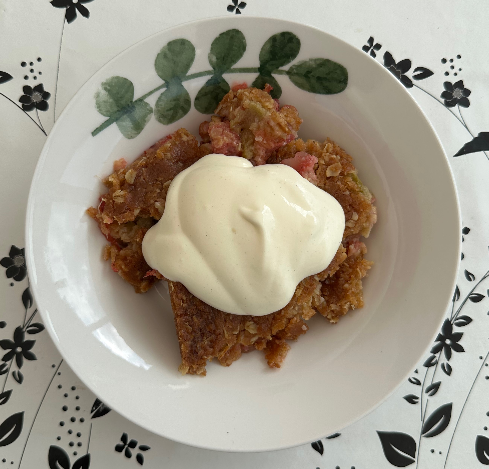

Knäckig rabarberpaj med jordgubbar
Sjukt god rabarberpaj med crunch! Detta är min favoritpaj och jag tillagar den alltid på midsommarafton, men den passar perfekt vilken helg som helst!

Ingridienser:
- Rabarber 400 g
- Jordgubbar 200 g
- Strösocker 0.5 dl
- Potatismjöl 2-3 msk
- Smör 175 g
- Havregryn 2 dl
- Vetemjöl 2 dl
- Strösocker 2 dl
- Bakpulver 1 tsk
- Flingsalt 1 tsk
- Ljus sirap 0.5 dl
Gör så här:
- 1. Sätt ugnen på 200 grader.
- 2. Smält smöret i en kastrull och låt svalna något.
- 3. Skölj och skiva rabarbern och jordgubbarna i mindre skivor.
- 4. Lägg i en pajform och strö över 0,5 dl socker och potatismjölet.
- 5. Blanda om.
- 6. Blanda mjöl, havregryn, socker, bakpulver och flingsalt i en bunke.
- 7. Tillsätt det smälta smöret och sirapen och rör om till en smet.
- 8. Klicka ut smeten över rabarbern och jordgubbarna.
- 9. Grädda i mitten av ugnen i ca 30 minuter, tills pajen har fått gyllenbrun färg och en knäckig yta.
- Servera gärna med vaniljglass eller vaniljvisp.